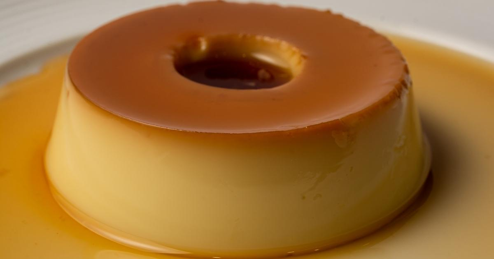

Como fazer o melhor pudim de todos os multiversos que faria até Thanos repensar a estalada

Receita
Ingredientes para o melhor PUDIM:
- 1 lata de leite condensado
- 1 lata de leite (medida da lata de leite condensado)
- 3 ovos inteiros
Ingredientes para a mais deliciosa CALDA:
1 xícara (chá) de açúcar
1/2 xícara de água
Modo de preparo:
Pudim:
- Primeiro, bata bem os ovos no liquidificador.
- Acrescente o leite condensado e o leite, e bata novamente.
Calda:
- Derreta o açúcar na panela até ficar moreno, acrescente a água e deixe engrossar.
- Coloque em uma forma redonda e despeje a massa do pudim por cima
- Asse em forno médio por 45 minutos, com a assadeira redonda dentro de uma maior com água.
- Espete um garfo para ver se está bem assado
- Deixe esfriar e desenforme